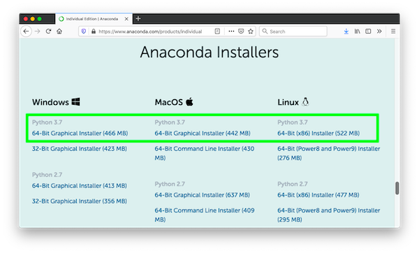
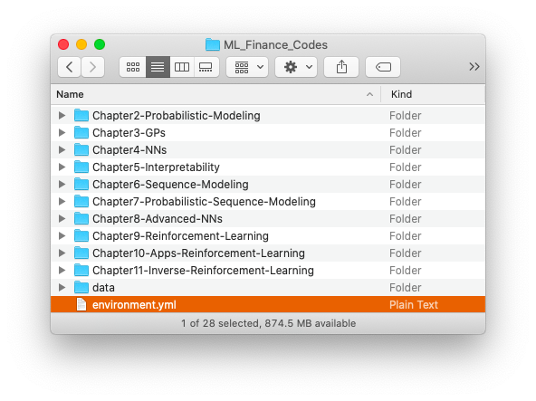
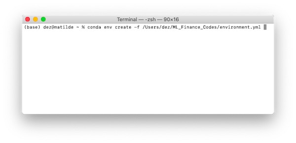
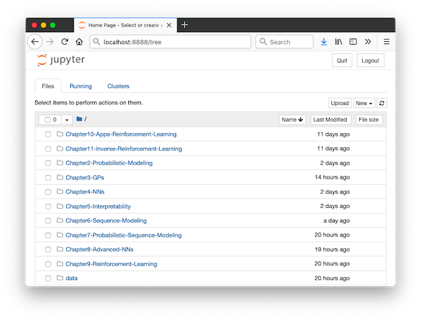

This guide contains instructions for installing the software necessary to run the Jupyter notebooks accompanying Machine Learning in Finance: From Theory to Practice
If you have already installed Anaconda and set up the “MLFenv” virtual environment, skip to Step 3 below for instructions on running the notebooks.
For help with running the notebooks on Google Colab, see the Google_Colab_Setup.ipynb notebook.
If you already have Anaconda installed, skip to Step 2 below. First, copy and paste this link into your browser’s address bar and download the latest Python 3.x Anaconda installer for your operating system:
https://www.anaconda.com/products/individual
Then go to the link below corresponding to your operating system and follow the instructions to install Anaconda:
Linux: https://docs.anaconda.com/anaconda/install/linux/
macOS: https://docs.anaconda.com/anaconda/install/mac-os/
Windows: https://docs.anaconda.com/anaconda/install/windows/
We will create a virtual environment called “MLFenv” from the specifications in the file environment.yml (macOS/Linux) or environment_WINDOWS.yml (Windows), which are in the ML_Finance_Codes folder. When it is active, Python will have access to all of the packages used to run the notebooks.

Leaving that window open, open a Terminal (macOS/Linux) or the Anaconda Prompt (Windows)
On macOS, open a Finder window, then press Cmd+Shift+U to enter the Utilities folder. Double-click the Terminal application to open it.
On Windows, open the Start menu and type “Anaconda Prompt”. Then, click on the Anaconda Prompt (anaconda3) application to open it.
On Ubuntu, you can press Ctrl+Alt+T to open a terminal window.
Type the command below, followed by a space.
conda env create -f Drag and drop the environment.yml (macOS/Linux) or environment_WINDOWS.yml (Windows) file from the ML_Finance_Codes folder into the Terminal/Anaconda Prompt window. This will complete the command with the path to the environment.yml file.
Make sure you use the correct .yml file for your operating system
It should look like this (though the actual path will vary):

After the installation has completed, you can follow the steps below to start a Jupyter notebook server and show the ML_Finance_Codes directory whenever you wish to use the notebooks.
Open a Terminal (macOS/Linux) or the Anaconda Prompt (Windows)
Activate the virtual Python environment for the notebooks. This switches to the Python installation we created above, which contains the libraries used by the notebooks.
conda activate MLFenvNavigate to the ML_Finance_Codes directory by using the cd command, followed by the path to the folder.
cd /path/to/your/ML_Finance_CodesStart the jupyter notebook server
jupyter notebookThis should open a browser window showing the ML_Finance_Codes directory in the Jupyter dashboard. You may now select a chapter and click on a notebook to open it.
